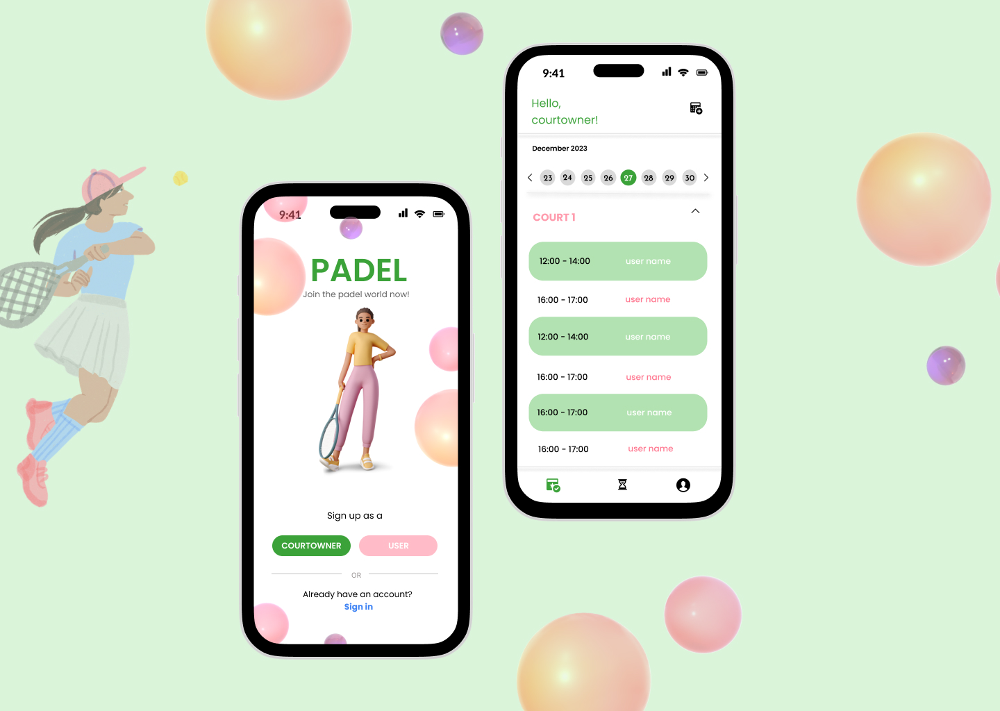

1. Research
I reviewed travel magazines and Club Canary’s brand identity to define tone and visual style consistent with its audience.

A digital & print magazine curated for tourists in Tenerife, showcasing excursions and local culture.

Club Canary
Layout Designer & Content Curator
3 weeks
InDesign · Figma · Photoshop
Visual Storytelling · Tourism Design
I reviewed travel magazines and Club Canary’s brand identity to define tone and visual style consistent with its audience.
Personas represented young travellers and families looking for authentic experiences and clear visual guidance.

I sketched article layouts, photo grids, and interactive QR code placements for quick excursion booking access.

Created a minimalist grid system with large imagery, bold titles, and subtle pink accents for brand consistency.

The magazine prototype was reviewed by the marketing team and tourists; feedback guided content re-organization.

This project strengthened my editorial design skills and proved the importance of visual hierarchy